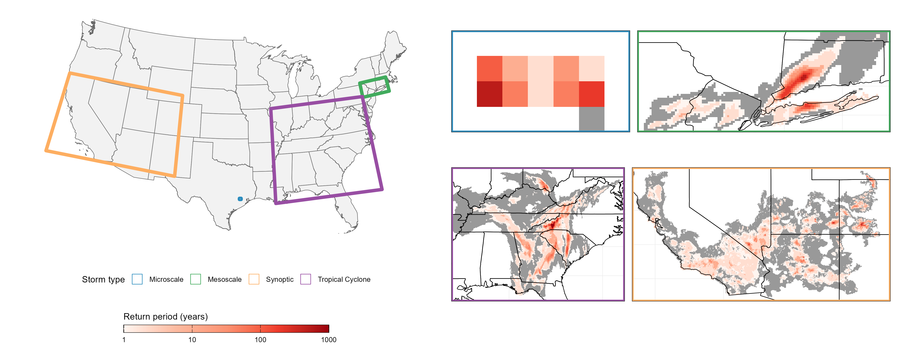
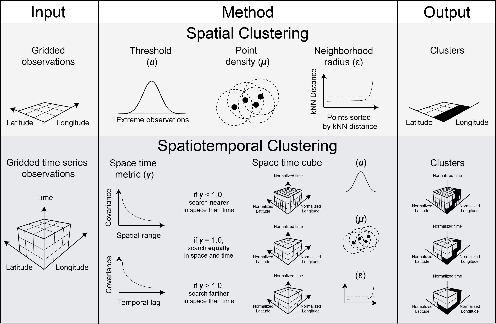

I am a geoscientist with a broad interest in extreme weather events and the hazards they pose. I am particularly interested in temporal geostatistics, extreme value analysis, spatiotemporal clustering, time series analysis, and predictive modeling.

A novel catalog of space- and time-evolving storms containing extreme precipitation from 2002 to 2025 across the Continental United States (CONUS).

A novel modeling framework for resampling any geophysical dataset to the resolution of geophysical fluctuation. We demonstrate this method improves event detection.
Preprint link